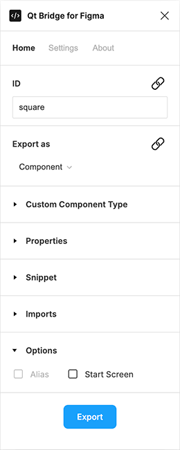
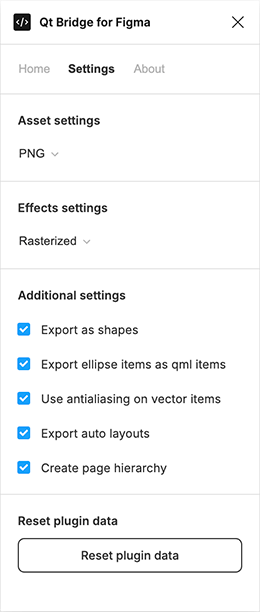

Using Qt Bridge for Figma
Organizing Designs
To get the best results during export and import, follow these guidelines when working with Figma:
- Use pages for different purposes, such as sketching for trying out ideas, components for creating UI components, assets for images that you use in the components, and screens for building the UI screens using components and assets.
- Arrange each page into frames. When you are happy with a design, move it from the sketching page to the components page and use it in screens. When you export your assets, you can skip all frames that you don't want to be part of the final UI, to avoid cluttering the Qt Design Studio project. The code generated in Qt Design Studio corresponds to the structure of your Figma document.
- Qt Bridge for Figma supports Figma components. Each Figma component is exported as a Qt Design Studio component, and each Figma component instance is generated as a respective component instance in the component files generated when you import the design into Qt Design Studio.
- Create components in Figma and export them to Qt Design Studio before you start making instances of them. In Qt Design Studio, add functionality to the components, such as button states and then bring them back to Figma as assets. If you use functional Qt Design Studio components in Figma, you will find it easier to merge new iterations of the design to Qt Design Studio and continue to build the screens there.
- Qt Bridge for Figma does not support exporting changes in component instances. If you make changes to component instances in Figma, you must detach the instances before exporting them. Similarly, if your Figma components contain nested components, Figma allows you to hot swap the nested instance inside the component instance. However, Qt Bridge for Figma doesn't support this so you get the original component unless you detach the component instance before exporting it.
- Use descriptive and unique IDs to avoid duplicate IDs after exporting designs and importing them to Qt Design Studio.
To use the fonts that you use in Figma also in Qt Design Studio, you need to add them to Qt Design Studio as assets. Qt Design Studio deploys them to devices when you preview the UI. For more information, see Using Custom Fonts.
Items You Can Export
You can export the following parts of your design using Qt Bridge for Figma:
- Images
- Vector images
- Layers
- Text layers
- Shape layers
- Components
- Component instances
- Frames
- Groups
Using Frames
Frames are exported as components of the Rectangle type by default. However, if you have applied effects to the frames that Qt Bridge for Figma cannot handle, such as gradient fill colors or a mixed radius, the frames are exported as images.
Using Variants
Figma variants are exported as a component with states. All variants inside a component-set are merged together and the differences across the variants are translated into states.
For an optimal output, follow these guidelines:
- Qt Bridge for Figma panel is disabled for variants. Before adding a variant to a component, the Qt Bridge for Figma settings for the component should be complete.
- Do not change the layer names across the variants. The ID of a layer is derived from the layer name which in turn is used to identify the property differences for the state generation, so it is essential to keep the layer names same across variants.
- Adding and removing layers across the variants is fine and encouraged to create the variant differences.
Exporting Designs

To export your design using Qt Bridge for Figma:
- Specify settings for exporting each group and layer.
- Select Export to export your design.
- When the exporting is done, select OK.
Qt Bridge for Figma exports everything into a .qtbridge archive. You can import the archive into a project in Qt Design Studio, as described in Importing 2D Assets.
Export Settings
You can specify export settings in the Home tab and in the Settings tab.
Home
You can specify settings for exporting each group and layer.
| Name | Purpose |
|---|---|
| ID | Qt Bridge for Figma automatically derives identifiers for all groups and layers from layer name. You can change them in this field. Use unique and descriptive IDs to avoid duplicate IDs when the layer and the respective artwork are imported into Qt Design Studio. Note: Once the ID is edited, the automatic assignment of ID from layer name stops for this layer. Use button next to ID to reset the ID back to automatic assignment. |
| Export as | Determines how to export the group or layer:
Note: Use button next to Export as to reset to default value. |
| Custom Component Type | Determines the component type to morph this layer into. The component that is generated during import will be of this type. For example, if you drew a button, you can export it as a Button component from the Qt Quick Controls module. You can provide the import statement of the module where the component is defined in the Imports field. |
| Properties | Sets values of properties for the component. You can add properties and modify their values in Qt Design Studio. |
| Imports | If you want to make additional components available in the component file, you can enter the import statements of the modules that contain the components in this field. For example, to use components from version 2.3 of the Qt Quick Controls module, you need the import statement QtQuick.Controls 2.3 and to use version 1.0 Qt Quick Studio Components, you need the import statement QtQuick.Studio.Components 1.0. You can add components from all the available modules in Qt Design Studio later. You can also import a module as an alias. |
| Properties | Specify new properties or assign values to the existing properties of the component. You can also add and modify properties in Qt Design Studio. The following are a few examples of the properties:property int counter: 5 property string label: "ok" antialiasing : true width: parent.width / 2 To remove a property, write a "dash" (-) followed by the "property name". For example:
- width
will remove the property width from the generated code. |
| Snippet | Specify component to be added as child under this component. Following example adds a Connection component:
Connections {
target: myItem
onVisibleChanged: console.log(original_Text.visible)
}
Note: The code must have a scope of a component(e.g. Item, MouseArea, Connections etc.) with a valid syntax for UI Files. Note: Add respective imports for your snippet in Imports. |
| Alias | Exports the component generated from this layer as an alias in the parent component. |
| Start Screen | Sets the component to be the starting component in Qt Design Studio project. |
Settings

You can export assets in the selected format (JPG, PNG, or SVG).
By default, vectors are exported as SVG Path Item components from the Qt Quick Studio Components module. This might not work for layers that have particular effects applied to them. In that case, the layers are exported as images.
Because MCUs only support simple images, disable the Export as shapes check box when designing for MCUs.
| Name | Purpose |
|---|---|
| Asset settings | Exports assets in the selected format (JPG, PNG, or SVG). |
| Export as shapes | Exports vectors as components of the type SVG Path Item from the Qt Quick Studio Components module. |
| Create page hierarchy | Organize the generated UI in Qt Design Studio under the directory named after the parent page of the respective component. |
| Reset plugin data | Resets all settings for all layers and groups (also in the Home tab) to default values. This means that you will lose all your changes to the settings. |